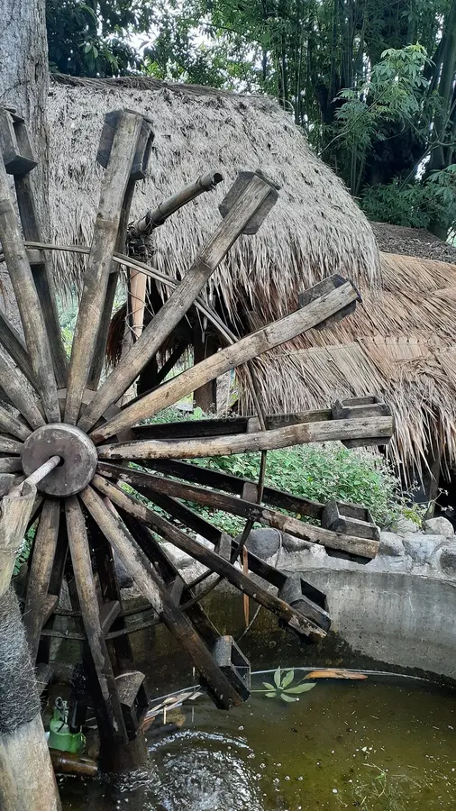
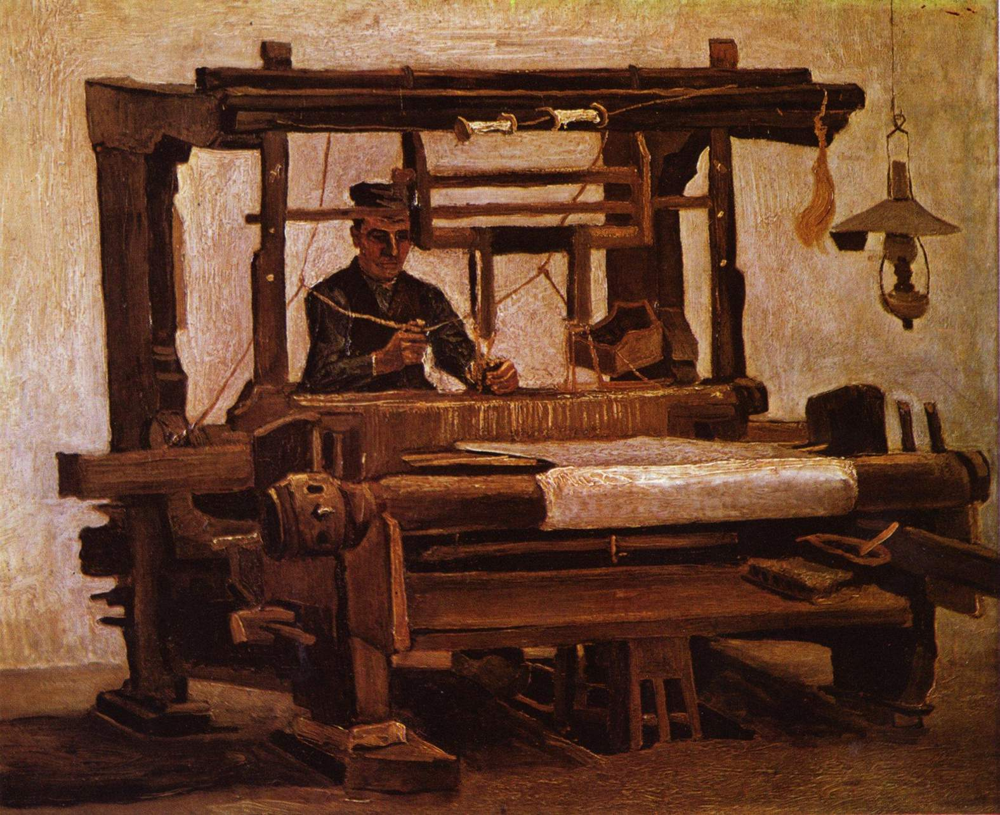

Introdução
Na era mercantil, identificada como era pré-mecânica, o principal modo de comunicação era a escrita e os diversos tipos de alfabetos espalhados pelo mundo. Aqui, as tecnologias mais avançadas estavam relacionadas ao plantio e a criação de animais, pois eram as principais atividades da época. Por isso, ferramentas como arado e geração de energia com animais como roda d’água eram as invenções que poderiam ver durante este período. O foco de crescimento também estava voltado para a expansão territorial, pois, quanto mais terra alguém tivesse, maior era o seu poder de investimento e lucro.

Era Industrial (1800 a 1830)
A era industrial abrange um período bem menor que a anterior, mas por um motivo específico. Entre os anos de 1820 e 1840, aconteceu a Revolução Industrial, que deu início a uma aceleração tecnológia e trouxe invenções como a máquina a vapor. Caracterizada por uma rápida mudança de uma economia agrária para uma economia manufatureira.
Agora, os produtos não estavam mais sendo feitos a mão, e começam a serem feitos por máquinas, aumentando a produção e mudando a maneira em que a humanidade passou a ver o comércio, produção, e automação de tarefas. Nesta fase, as tecnologias principais eram a máquina de fiar, o tear mecânico, a locomotiva, e outros. A ideia principal era automatizar coisas que eram somente feitas por humanos, fazendo com que a produção se tornasse muito mais rápida.

Era da Informação (Século XX)
A era da informação é caracterizada por uma mudança radical na indústria tradicional que já estava estabelecida pelos moldes da Revolução Industrial para uma nova economia, agora baseada principalmente na informação tecnológica. Com a chegada de tecnologias como computadores, televisão por satélite, internet, jornais e radio, a informação começou a se espalhar cada vez mais rápido, chegando em lugares onde antes não era possível.
Essa é a era que estamos acostumados a ouvir, onde os dispositivos que fazem parte de nossa vida foram criados ou prototipados. A conectividade passou a ser a palavra da vez, e a moeda de troca começa a ser a informação. Quem possui mais informação está no controle do que acontece e do que as pessoas tem acesso.
Era Digital
Atualmente, estamos na Era Digital. Engana-se quem associa a era da informação, a adoção de celulares, popularização de computadores e laptops, tablets e wearables com os dias que vivemos. Agora, em 2023, a era digital tem como principal característica a grande proporção de informação disponível para muitas pessoas.
Fomos do analógico para o mecânico e agora, para o tecnológico. Muitas profissões deixaram de existir ou tiveram que ser adaptadas para a grande quantidade de informações disponíveis. Estamos acompanhando atualmente a popularização das IAs, que possuem toda a internet como fonte de busca e conhecimento. Chega a ser assustadora a evolução até aqui, mas ainda não paramos nas inovações.
As principais tecnologias dessa era são as nuvens, ou clouds, e a migração de muitas empresas ou até pessoas que passaram a utilizar esse serviço em nuvem, armazenamento massivo de dados que podem ser acessados de qualquer lugar, sem depender de algo físico; a automação de serviços está ainda mais presente; e a Internet das Coisas, ou IoT, que basicamente é uma rede de dispositivos, todos conectados através da internet.